Variational Gradient Matching for Dynamical Systems: Lotka-Volterra

Authors: Nico Stephan Gorbach and Stefan Bauer, email: nico.gorbach@gmail.com
Instructional code for the NIPS (2018) paper " Scalable Variational Inference for Dynamical Systems " by Nico S. Gorbach, Stefan Bauer and Joachim M. Buhmann. The paper is available at https://papers.nips.cc/paper/7066-scalable-variational-inference-for-dynamical-systems.pdf. Please cite our paper if you use our program for a further publication. Part of the derivation below is described in Wenk et al. (2018).
Example dynamical system used in this code: Lotka-Volterra system with half of the time points unobserved. The ODE parameters are also unobserved.
Contents
- Advantages of Variational Gradient Matching
- Simulation Settings
- User Input
- Import ODEs
- Mass Action Dynamical Systems
- Simulate Trajectory Observations
- Prior on States and State Derivatives
- Matching Gradients
- State Couplings in ODEs
- Rewrite ODEs as Linear Combination in Parameters
- Posterior over ODE Parameters
- Rewrite ODEs as Linear Combination in Individual States
- Posterior over Individual States
- Mean-field Variational Inference
- Fitting observations of state trajectories
- Coordinate Ascent Variational Gradient Matching
- Time Taken
- References
- Subroutines
Advantages of Variational Gradient Matching
The essential idea of gradient matching (Calderhead et al., 2002) is to match the gradient governed by the ODEs with that inferred from the observations. In contrast to previous approaches gradient matching introduces a prior over states instead of a prior over ODE parameters. The advantages of gradients matching is two-fold:
- A prior over the functional form of state dynamics as opposed to ODE parameters facilitates a more expert-aware estimation of ODE parameters since experts can provide a better a priori description of state dynamics than ODE parameters.
- Gradient matching yields a global gradient as opposed to a local one which offers significant computational advantages and provides access to a rich source of sophisticated optimization tools.
Clear workspace and close figures
clear all; close all;
Simulation Settings
simulation.state_obs_variance = @(mean)(bsxfun(@times,[0.5^2,0.5^2],... ones(size(mean)))); % observation noise simulation.ode_param = [2,1,4,1]; % true ODE parameters [2 1 4 1] is used as a benchmark in many publications; simulation.final_time = 2; % end time for integration simulation.int_interval = 0.01; % integration interval simulation.time_samp = 0:0.1:simulation.final_time; % sample times for observations simulation.init_val = [5 3]; % state values at first time point simulation.state_obs_idx = [1,1]; % indices of states that are directly observed (Boolean)
User Input
Kernel
Kernel parameters  :
:
kernel.param = [10,0.2]; % set values of rbf kernel parameters
Error variance on state derivatives (i.e. 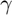):
state.derivative_variance = [6,6]; % gamma for gradient matching model
Estimation times
time.est = 0:0.1:4; % estimation times
Optimization settings
opt_settings.pseudo_inv_type = 'Moore-Penrose'; % Type of pseudo inverse; options: 'Moore-Penrose' or 'modified Moore-Penrose' opt_settings.coord_ascent_numb_iter = 200; % number of coordinate ascent iterations opt_settings.clamp_obs_state_to_GP_fit = false; % The observed state trajectories are clamped to the trajectories determined by standard GP regression (Boolean)
Symbols
States 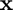:
symbols.state = {'[prey]','[predator]'}; % symbols of states in 'ODEs.txt' file
ODE parameters 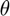:
symbols.param = {'[\theta_1]','[\theta_2]','[\theta_3]','[\theta_4]'}; % symbols of parameters in 'ODEs.txt' file
Import ODEs
ode = import_odes(symbols);
disp('ODEs:'); disp(ode.raw)
ODEs:
'[\theta_1].*[prey] - [\theta_2].*[prey].*[predator]'
'-[\theta_3].*[predator] + [\theta_4].*[prey].*[predator]'
Mass Action Dynamical Systems
A deterministic dynamical system is represented by a set of  ordinary differential equations (ODEs) with model parameters 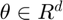 that describe the evolution of states 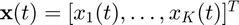 such that:
ordinary differential equations (ODEs) with model parameters 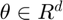 that describe the evolution of states 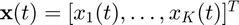 such that:
 .
.
A sequence of observations, 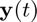, is usually contaminated by measurement error which we assume to be normally distributed with zero mean and variance for each of the states, i.e.  , with
, with  . For 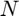 distinct time points the overall system may therefore be summarized as:
. For 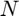 distinct time points the overall system may therefore be summarized as:
 ,
,
where
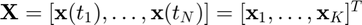,
![$\mathbf{Y} = [\mathbf{y}(t_1),\ldots,\mathbf{y}(t_N)] = [\mathbf{y}_1,\ldots,\mathbf{y}_K]^T$](Lotka_Volterra_eq07638385370877036024.png) ,
,
and 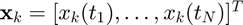 is the  'th state sequence and 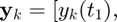 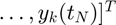 are the observations. Given the observations
'th state sequence and 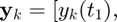 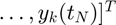 are the observations. Given the observations  and the description of the dynamical system (1), the aim is to estimate both state variables 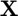 and parameters .
and the description of the dynamical system (1), the aim is to estimate both state variables 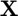 and parameters .
We consider only dynamical systems that are locally linear with respect to ODE parameters and individual states  . Such ODEs include mass-action kinetics and are given by:
. Such ODEs include mass-action kinetics and are given by:
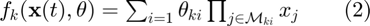,
with 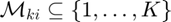 describing the state variables in each factor of the equation (i.e. the functions are linear in parameters and contain arbitrary large products of monomials of the states).
Simulate Trajectory Observations
Generate ground truth by numerical integration
[state,time,ode] = generate_ground_truth(time,state,ode,symbols,simulation);
Generate state observations
[state,time,obs_to_state_relation] = generate_state_obs(state,time,simulation);
Symbols
state.sym.mean = sym('x%d%d',[length(time.est),length(ode.system)]); state.sym.variance = sym('sigma%d%d',[length(time.est),length(ode.system)]); ode_param.sym.mean = sym('param%d',[length(symbols.param),1]); assume(ode_param.sym.mean,'real');
Setup plots
Only the state dynamics are (partially) observed.
[h_states,h_param,p] = setup_plots(state,time,simulation,symbols);
tic; %start timer
Prior on States and State Derivatives
Gradient matching with Gaussian processes assumes a joint Gaussian process prior on states and their derivatives:
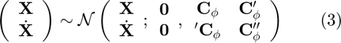,
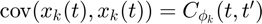
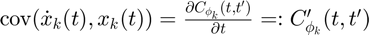

 .
.
Matching Gradients
Given the joint distribution over states and their derivatives (3) as well as the ODEs (2), we therefore have two expressions for the state derivatives:
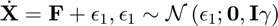
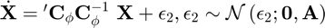
where  ,
,  and is the error variance in the ODEs. Note that, in a deterministic system, the output of the ODEs 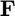 should equal the state derivatives 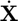. However, in the first equation above we relax this contraint by adding stochasticity to the state derivatives in order to compensate for a potential model mismatch. The second equation above is obtained by deriving the conditional distribution for from the joint distribution in equation (3). Equating the two expressions in the equations above we can eliminate the unknown state derivatives :
and is the error variance in the ODEs. Note that, in a deterministic system, the output of the ODEs 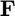 should equal the state derivatives 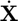. However, in the first equation above we relax this contraint by adding stochasticity to the state derivatives in order to compensate for a potential model mismatch. The second equation above is obtained by deriving the conditional distribution for from the joint distribution in equation (3). Equating the two expressions in the equations above we can eliminate the unknown state derivatives :
 ,
,
with 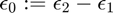.
[dC_times_invC,inv_C,A_plus_gamma_inv] = kernel_function(kernel,state,time.est);
State Couplings in ODEs
coupling_idx = find_state_couplings_in_odes(ode,symbols);
Rewrite ODEs as Linear Combination in Parameters
We rewrite the ODEs in equation (2) as a linear combination in the parameters:
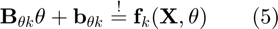,
where matrices  and
and  are defined such that the ODEs
are defined such that the ODEs  are expressed as a linear combination in .
are expressed as a linear combination in .
[ode_param.lin_comb.B,ode_param.lin_comb.b] = rewrite_odes_as_linear_combination_in_parameters(ode,symbols);
Posterior over ODE Parameters
Inserting (5) into (4) and solving for yields:
 ,
,
where 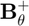 denotes the pseudo-inverse of 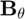.
Since 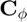 is block diagonal we can rewrite the expression above as:
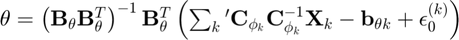,
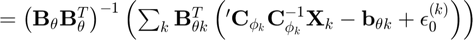,
where we subsitute the Moore-Penrose inverse for the pseudo-inverse (i.e.  ).
).
We can therefore derive the posterior distribution over ODE parameters:

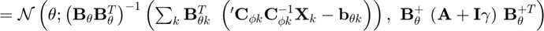
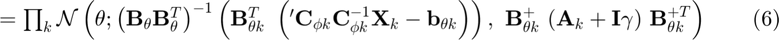
Rewrite ODEs as Linear Combination in Individual States
We rewrite the expression 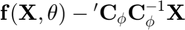 in equation (4) as a linear combination in the individual state :
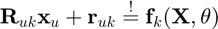.
where matrices 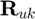 and  are defined such that the ODE is expressed as a linear combination in the individual state .
are defined such that the ODE is expressed as a linear combination in the individual state .
[state.lin_comb.R,state.lin_comb.r] = rewrite_odes_as_linear_combination_in_ind_states(ode,symbols,coupling_idx.states);
Posterior over Individual States
Given the linear combination of the ODEs w.r.t. an individual state, we define the matrices 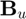 and 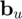 such that the expression is rewritten as a linear combination in an individual state:
 .
.
Inserting (7) into (4) and solving for yields:
 ,
,
Since is block diagonal we can rewrite the expression above as:

 ,
,
where 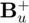 denotes the pseudo-inverse of  . We can therefore derive the posterior distribution over an individual state :
. We can therefore derive the posterior distribution over an individual state :

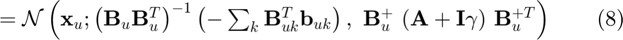,
with  denoting the set of all states except state .
denoting the set of all states except state .
Mean-field Variational Inference
To infer the parameters , we want to find the maximum a posteriori estimate (MAP):
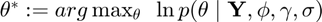

 .
.
However, the integral above is intractable due to the strong couplings induced by the nonlinear ODEs  which appear in the term
which appear in the term  .
.
We use mean-field variational inference to establish variational lower bounds that are analytically tractable by decoupling state variables from the ODE parameters as well as decoupling the state variables from each other. Note that, since the ODEs described by equation (2) are locally linear, both conditional distributions 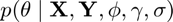 (equation (6)) and  (equation (8)) are analytically tractable and Gaussian distributed as mentioned previously.
(equation (8)) are analytically tractable and Gaussian distributed as mentioned previously.
The decoupling is induced by designing a variational distribution 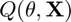 which is restricted to the family of factorial distributions:
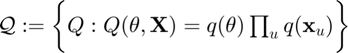.
The particular form of  and 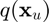 are designed to be Gaussian distributed which places them in the same family as the true full conditional distributions. To find the optimal factorial distribution we minimize the Kullback-Leibler divergence between the variational and the true posterior distribution:
and 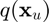 are designed to be Gaussian distributed which places them in the same family as the true full conditional distributions. To find the optimal factorial distribution we minimize the Kullback-Leibler divergence between the variational and the true posterior distribution:
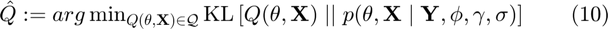,
where 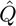 is the proxy distribution. The proxy distribution that minimizes the KL-divergence (10) depends on the true full conditionals and is given by:

 .
.
Fitting observations of state trajectories
We fit the observations of state trajectories by standard GP regression. The data-informed distribution 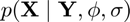 in euqation (9) can be determined analytically using Gaussian process regression with the GP prior 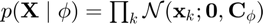:
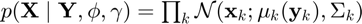,
where  and
and  .
.
[mu,inv_sigma] = fitting_state_observations(state,inv_C,obs_to_state_relation,simulation);
Coordinate Ascent Variational Gradient Matching
We minimize the KL-divergence in equation (10) by coordinate descent (where each step is analytically tractable) by iterating between determining the proxy for the distribution over ODE parameters 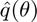 and the proxies for the distribution over individual states 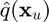.
state.proxy.mean = mu; % Initialize the state estimation by the GP regression posterior for i = 1:opt_settings.coord_ascent_numb_iter
Proxy for ODE parameters
Expanding the proxy distribution in equation (11) for yields:


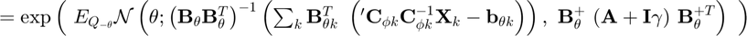,
which can be normalized analytically due to its exponential quadratic form. In (a) we recall that the ODE parameters depend only indirectly on the observations through the states and in (b) we substitute by its density given in equation (6).
[param_proxy_mean,param_proxy_inv_cov] = proxy_for_ode_parameters(state.proxy.mean,dC_times_invC,... ode_param.lin_comb,symbols,A_plus_gamma_inv,opt_settings); if i==1 || ~mod(i,20); plot_results(h_states,h_param,state,time,simulation,param_proxy_mean,p,'not_final'); end


Proxy for individual states
Expanding the proxy distribution in equation (12) over the individual state :

 ,
,
which, once more, can be normalized analytically due to its exponential quadratic form. In (a) we decompose the full conditional into an ODE-informed distribution and a data-informed distribution and in (b) we substitute the ODE-informed distribution with its density given by equation (8).
[state.proxy.mean,state.proxy.inv_cov] = proxy_for_ind_states(state.lin_comb,state.proxy.mean,... param_proxy_mean',dC_times_invC,coupling_idx.states,symbols,mu,inv_sigma,state.obs_idx,... A_plus_gamma_inv,opt_settings);
end
Final result
plot_results(h_states,h_param,state,time,simulation,param_proxy_mean,p,'final');

Time Taken
disp(['time taken: ' num2str(toc) ' seconds'])
time taken: 73.6314 seconds
References
- Gorbach, N.S. , Bauer, S. and Buhmann, J.M., Scalable Variational Inference for Dynamical Systems. 2017a. Neural Information Processing Systems (NIPS). https://papers.nips.cc/paper/7066-scalable-variational-inference-for-dynamical-systems.pdf, arxiv: https://arxiv.org/abs/1705.07079.
- Bauer, S. , Gorbach, N.S. and Buhmann, J.M., Efficient and Flexible Inference for Stochastic Differential Equations. 2017b. Neural Information Processing Systems (NIPS). https://papers.nips.cc/paper/7274-efficient-and-flexible-inference-for-stochastic-systems.pdf
- Wenk, P., Gotovos, A., Bauer, S., Gorbach, N.S., Krause, A. and Buhmann, J.M., Fast Gaussian Process Based Gradient Matching for Parameters Identification in Systems of Nonlinear ODEs. 2018. In submission to Conference on Uncertainty in Artificial Intelligence (UAI).
- Calderhead, B., Girolami, M. and Lawrence. N.D., 2002. Accelerating Bayesian inference over nonlinear differential equation models. In Advances in Neural Information Processing Systems (NIPS) . 22.
The authors in bold font have contributed equally to their respective papers.
Subroutines
Kernel function
Gradient matching with Gaussian processes assumes a joint Gaussian process prior on states and their derivatives:
,
.
function [dC_times_invC,inv_C,A_plus_gamma_inv] = kernel_function(kernel,state,time_est)
kernel.param_sym = sym('rbf_param%d',[1,2]); assume(kernel.param_sym,'real'); kernel.time1 = sym('time1'); assume(kernel.time1,'real'); kernel.time2 = sym('time2'); assume(kernel.time2,'real'); kernel.func = kernel.param_sym(1).*exp(-(kernel.time1-kernel.time2).^2./(kernel.param_sym(2).^2)); % RBF kernel kernel.name = 'rbf';
kernel derivatives
for i = 1:length(kernel) kernel.func_d = diff(kernel.func,kernel.time1); kernel.func_dd = diff(kernel.func_d,kernel.time2); GP.fun = matlabFunction(kernel.func,'Vars',{kernel.time1,kernel.time2,kernel.param_sym}); GP.fun_d = matlabFunction(kernel.func_d,'Vars',{kernel.time1,kernel.time2,kernel.param_sym}); GP.fun_dd = matlabFunction(kernel.func_dd,'Vars',{kernel.time1,kernel.time2,kernel.param_sym}); end
populate GP covariance matrix
for t=1:length(time_est) C(t,:)=GP.fun(time_est(t),time_est,kernel.param); dC(t,:)=GP.fun_d(time_est(t),time_est,kernel.param); Cd(t,:)=GP.fun_d(time_est,time_est(t),kernel.param); ddC(t,:)=GP.fun_dd(time_est(t),time_est,kernel.param); end
GP covariance scaling
[~,D] = eig(C); perturb = abs(max(diag(D))-min(diag(D))) / 10000; if any(diag(D)<1e-6); C(logical(eye(size(C,1)))) = C(logical(eye(size(C,1)))) + perturb.*rand(size(C,1),1); end [~,D] = eig(C); if any(diag(D)<0); error('C has negative eigenvalues!'); elseif any(diag(D)<1e-6); warning('C is badly scaled'); end inv_C = inv_chol(chol(C,'lower')); dC_times_invC = dC * inv_C;
plot samples from GP prior
figure(3); hold on; plot(time_est,mvnrnd(zeros(1,length(time_est)),C(:,:,1),3),'LineWidth',2); h1 = gca; h1.FontSize = 20; h1.XLabel.String = 'time'; h1.YLabel.String = 'state value'; h1.Title.String = [kernel.name ' kernel'];

determine  :
:
A = ddC - dC_times_invC * Cd; A_plus_gamma = A + state.derivative_variance(1) .* eye(size(A)); A_plus_gamma = 0.5.*(A_plus_gamma+A_plus_gamma'); % ensure that A plus gamma is symmetric A_plus_gamma_inv = inv_chol(chol(A_plus_gamma,'lower'));
end
Fitting state observations
We fit the observations of state trajectories by standard GP regression.
,
where and .
function [mu_u,inv_sigma_u,state] = fitting_state_observations(state,inv_C,obs_to_state_relation,simulation)
Dimensions
numb_states = size(state.sym.mean,2); numb_time_points = size(state.sym.mean,1);
Variance of state observations
state_obs_variance = simulation.state_obs_variance(state.obs);
Form block-diagonal matrix out of 
inv_C_replicas = num2cell(inv_C(:,:,ones(1,numb_states)),[1,2]);
inv_C_blkdiag = sparse(blkdiag(inv_C_replicas{:}));
GP posterior inverse covariance matrix:
dim = size(state_obs_variance,1)*size(state_obs_variance,2);
D = spdiags(reshape(state_obs_variance.^(-1),[],1),0,dim,dim) * speye(dim); % covariance matrix of error term (big E)
A_times_D_times_A = obs_to_state_relation' * D * obs_to_state_relation;
inv_sigma = A_times_D_times_A + inv_C_blkdiag;
GP posterior mean: $\boldmath\mu_k(\mathbf{y}_k) := \sigma_k^{-2} \left(\sigma_k^{-2} \mathbf{I} + \mathbf{C}_{\boldmath\phi_k}^{-1} \right)^{-1} \mathbf{y}_k
mu = inv_sigma \ obs_to_state_relation' * D * reshape(state.obs,[],1);
Reshape GP mean
mu_u = zeros(numb_time_points,numb_states); for u = 1:numb_states idx = (u-1)*numb_time_points+1:(u-1)*numb_time_points+numb_time_points; mu_u(:,u) = mu(idx); end
Reshape GP inverse covariance matrix
inv_sigma_u = zeros(numb_time_points,numb_time_points,numb_states); for i = 1:numb_states idx = [(i-1)*numb_time_points+1:(i-1)*numb_time_points+numb_time_points]; inv_sigma_u(:,:,i) = inv_sigma(idx,idx); end
end
Find state ODE couplings
function coupling_idx = find_state_couplings_in_odes(ode,symbols) state_sym = sym('state%d',[1,length(ode.system)]); assume(state_sym,'real'); for k = 1:length(ode.system) tmp_idx = ismember(state_sym,symvar(ode.system_sym(k))); tmp_idx(:,k) = 1; ode_couplings_states(k,tmp_idx) = 1; end for u = 1:length(symbols.state) coupling_idx.states{u} = find(ode_couplings_states(:,u)); end end
Rewrite ODEs as linear combination in parameters
 ,
,
where matrices and are defined such that the ODEs are expressed as a linear combination in .
function [B,b] = rewrite_odes_as_linear_combination_in_parameters(ode,symbols)
Initialization of symbolic variables
param_sym = sym('param%d',[1,length(symbols.param)]); assume(param_sym,'real'); state_sym = sym('state%d',[1,length(symbols.state)]); assume(state_sym,'real'); state0_sym = sym('state0'); assume(state0_sym,'real'); state_const_sym = sym('state_const'); assume(state_const_sym,'real');
Rewrite ODEs as linear combinations in parameters (global)
[B_sym,b_sym] = equationsToMatrix(ode.system_sym,param_sym);
b_sym = -b_sym; % See the documentation of the function "equationsToMatrix"
Operations locally w.r.t. ODEs
for k = 1:length(ode.system) B_sym(k,B_sym(k,:)=='0') = state0_sym; for i = 1:length(B_sym(k,:)) sym_var = symvar(B_sym(k,i)); if isempty(sym_var) B_sym(k,i) = B_sym(k,i) + state0_sym; end end B{k} = matlabFunction(B_sym(k,:),'Vars',{state_sym,state0_sym,state_const_sym}); b{k} = matlabFunction(b_sym(k,:),'Vars',{state_sym,state0_sym,state_const_sym}); end
end
Rewrite ODEs as linear combination in individual states
.
where matrices and are defined such that the ODEs is rewritten as a linear combination in the individual state .
function [R,r] = rewrite_odes_as_linear_combination_in_ind_states(ode,symbols,coupling_idx)
Initialization of symbolic variables
param_sym = sym('param%d',[1,length(symbols.param)]); assume(param_sym,'real'); state_sym = sym('state%d',[1,length(symbols.state)]); assume(state_sym,'real'); state0_sym = sym('state0'); assume(state0_sym,'real'); state_const_sym = sym('state_const'); assume(state_const_sym,'real');
Rewrite ODEs as linear combinations in parameters (locally)
for u = 1:length(symbols.state) for k = coupling_idx{u}' [R_sym,r_sym] = equationsToMatrix(ode.system{k}(state_sym,param_sym'),state_sym(:,u)); r_sym = -r_sym; % See the documentation of the function "equationsToMatrix" R{u,k} = matlabFunction(R_sym,'Vars',{state_sym,param_sym}); r{u,k} = matlabFunction(r_sym,'Vars',{state_sym,param_sym}); end end
end
Proxy for ODE parameters
 ,
,
function [param_proxy_mean,param_proxy_inv_cov] = proxy_for_ode_parameters(state_proxy_mean,... dC_times_invC,lin_comb,symbols,A_plus_gamma_inv,opt_settings)
Initialization
state0 = zeros(size(dC_times_invC,1),1); param_proxy_inv_cov = zeros(length(symbols.param)); global_scaling = zeros(length(symbols.param)); global_mean = zeros(length(symbols.param),1);
Iteratate through ODEs
for k = 1:length(symbols.state)
unpack matrices  and
and
B = lin_comb.B{k}(state_proxy_mean,state0,ones(size(state_proxy_mean,1),1));
b = lin_comb.b{k}(state_proxy_mean,state0,ones(size(state_proxy_mean,1),1));
Local
if strcmp(opt_settings.pseudo_inv_type,'Moore-Penrose') % local mean: $\mathbf{B}_{\theta k}^T ~ \left( {'\mathbf{C}_{\phi_k}} \mathbf{C}_{\phi k}^{-1} \mathbf{X}_k - \mathbf{b}_{\theta k}$ local_mean = B' * (dC_times_invC * state_proxy_mean(:,k) - b); local_scaling = B' * B; local_inv_cov = B' * A_plus_gamma_inv * B; elseif strcmp(opt_settings.pseudo_inv_type,'modified Moore-Penrose') local_mean = B' * A_plus_gamma_inv * (dC_times_invC * state_proxy_mean(:,k) - b); local_scaling = B' * A_plus_gamma_inv * B; local_inv_cov = local_scaling; end
Global
global_mean = global_mean + local_mean;
global_scaling = global_scaling + local_scaling;
% Inverse covariance of ODE param proxy distribution
param_proxy_inv_cov = param_proxy_inv_cov + local_inv_cov;
end
Check scaling of covariance matrix
[~,D] = eig(param_proxy_inv_cov); if any(diag(D)<0) warning('param_proxy_inv_cov has negative eigenvalues!'); elseif any(diag(D)<1e-3) warning('param_proxy_inv_cov is badly scaled') disp('perturbing diagonal of param_proxy_inv_cov') perturb = abs(max(diag(D))-min(diag(D))) / 10000; param_proxy_inv_cov(logical(eye(size(param_proxy_inv_cov,1)))) = param_proxy_inv_cov(logical(eye(size(param_proxy_inv_cov,1)))) ... + perturb.*rand(size(param_proxy_inv_cov,1),1); end
Mean of parameter proxy distribution (option: Moore-penrose inverse example): 
param_proxy_mean = global_scaling \ global_mean;
param_proxy_mean = abs(param_proxy_mean); % mirroring to preserve magnitude
end
Proxy for individual states
 ,
,
function [state_proxy_mean,state_proxy_inv_cov] = proxy_for_ind_states(lin_comb,state_proxy_mean,... ode_param,dC_times_invC,coupling_idx,symbols,mu,inv_sigma,state_obs_idx,... A_plus_gamma_inv,opt_settings)
Clamp observed states to GP fit
if opt_settings.clamp_obs_state_to_GP_fit state_enumeration = find(~state_obs_idx); else state_enumeration = 1:length(symbols.state); end for u = state_enumeration
Initialization
state_proxy_inv_cov(:,:,u) = zeros(size(dC_times_invC));
global_scaling = zeros(size(dC_times_invC));
global_mean = zeros(size(dC_times_invC,1),1);
Iteratate through ODEs
for k = coupling_idx{u}'
unpack matrices and
R = diag(lin_comb.R{u,k}(state_proxy_mean,ode_param));
r = lin_comb.r{u,k}(state_proxy_mean,ode_param);
if size(R,1) == 1; R = R.*eye(size(dC_times_invC,1)); end
if length(r)==1; r = zeros(length(global_mean),1); end
Define matrices B and b such that
if k~=u B = R; b = r - dC_times_invC * state_proxy_mean(:,k); else B = R - dC_times_invC; b = r; end
Local
if strcmp(opt_settings.pseudo_inv_type,'Moore-Penrose') % local mean: $\mathbf{B}_{uk}^T \left(\epsilon_0^{(k)} -\mathbf{b}_{uk} local_mean = -B' * b; local_scaling = B' * B; local_inv_cov = B' * A_plus_gamma_inv * B; elseif strcmp(opt_settings.pseudo_inv_type,'modified Moore-Penrose') local_mean = -B' * A_plus_gamma_inv * b; local_scaling = B' * A_plus_gamma_inv * B; local_inv_cov = local_scaling; end
Global
global_mean = global_mean + local_mean;
global_scaling = global_scaling + local_scaling;
Inverse covariance for state proxy distribution
state_proxy_inv_cov(:,:,u) = state_proxy_inv_cov(:,:,u) + local_inv_cov;
end
Mean of state proxy distribution (option: Moore-penrose inverse example): 
state_proxy_mean(:,u) = (global_scaling + inv_sigma(:,:,u)) \ (global_mean + (inv_sigma(:,:,u) * mu(:,u)));
end
end
Import ODEs
function ode = import_odes(symbols)
Path to system of ODEs
path_ode = './Lotka_Volterra_ODEs.txt';
Import ODEs
ode.raw = importdata(path_ode); ode.refined = ode.raw;
Refine ODEs
for k = 1:length(ode.refined) for u = 1:length(symbols.state); ode.refined{k} = strrep(ode.refined{k},[symbols.state{u}],['state(:,' num2str(u) ')']); end for j = 1:length(symbols.param); ode.refined{k} = strrep(ode.refined{k},symbols.param{j},['param(' num2str(j) ')']); end end for k = 1:length(ode.refined); ode.system{k} = str2func(['@(state,param)(' ode.refined{k} ')']); end
end
Generate ground truth
function [state,time,ode] = generate_ground_truth(time,state,ode,symbols,simulation)
Integration times
time.true=0:simulation.int_interval:simulation.final_time; % ture times Tindex=length(time.true); % index time TTT=length(simulation.time_samp); % number of sampled points itrue=round(simulation.time_samp./simulation.int_interval+ones(1,TTT)); % Index of sample time in the true time
Symbolic computations
param_sym = sym('param%d',[1,length(symbols.param)]); assume(param_sym,'real'); state_sym = sym('state%d',[1,length(symbols.state)]); assume(state_sym,'real'); for i = 1:length(ode.system) ode.system_sym(i) = ode.system{i}(state_sym,param_sym); end
Fourth order Runge-Kutta (numerical) integration
ode_system_mat = matlabFunction(ode.system_sym','Vars',{state_sym',param_sym'});
[~,OutX_solver]=ode45(@(t,x) ode_system_mat(x,simulation.ode_param'), time.true, simulation.init_val);
state.true_all=OutX_solver;
state.true=state.true_all(itrue,:);
Pack
state.obs_idx = simulation.state_obs_idx;
end
Generate observations of states
function [state,time,obs_to_state_relation] = generate_state_obs(state,time,simulation)
State observations
state_obs_variance = simulation.state_obs_variance(state.true); state.obs = state.true + sqrt(state_obs_variance) .* randn(size(state.true));
Mapping between states and observations
if length(simulation.time_samp) < length(time.est) time.idx = munkres(pdist2(simulation.time_samp',time.est')); time.ind = sub2ind([length(simulation.time_samp),length(time.est)],1:length(simulation.time_samp),time.idx); else time.idx = munkres(pdist2(time.est',simulation.time_samp')); time.ind = sub2ind([length(time.est),length(simulation.time_samp)],1:length(time.est),time.idx); end time.obs_time_to_state_time_relation = zeros(length(simulation.time_samp),length(time.est)); time.obs_time_to_state_time_relation(time.ind) = 1; state_mat = eye(size(state.true,2)); obs_to_state_relation = sparse(kron(state_mat,time.obs_time_to_state_time_relation)); time.samp = simulation.time_samp;
end
Setup plots
function [h_states,h_param,p] = setup_plots(state,time,simulation,symbols)
Refine ODE parameter symbols
for i = 1:length(symbols.param); symbols.param{i} = symbols.param{i}(2:end-1); end
Figure size and position setup
figure(1); set(1, 'Position', [0, 200, 1200, 500]);

ODE parameters
h_param = subplot(1,3,1); h_param.FontSize = 20; h_param.Title.String = 'ODE parameters'; set(gca,'XTick',[1:length(symbols.param)]); set(gca,'XTickLabel',symbols.param); hold on; drawnow

States
for u = 1:2 h_states{u} = subplot(1,3,u+1); cla; p.true = plot(time.true,state.true_all(:,u),'LineWidth',2,'Color',[217,95,2]./255); hold on; p.obs = plot(simulation.time_samp,state.obs(:,u),'*','Color',[217,95,2]./255,'MarkerSize',10); h_states{u}.FontSize = 20; h_states{u}.Title.String = symbols.state{u}(2:end-1); h_states{u}.XLim = [min(time.est),max(time.est)]; h_states{u}.XLabel.String = 'time'; hold on; end

end
Plot results
function plot_results(h_states,h_param,state,time,simulation,param_proxy_mean,p,plot_type) for u = 1:2 if strcmp(plot_type,'final') % State proxy variance state_proxy_variance = diag(state.proxy.inv_cov(:,:,u)^(-1)); shaded_region = [state.proxy.mean(:,u)+1*sqrt(state_proxy_variance); flip(state.proxy.mean(:,u)-1*sqrt(state_proxy_variance),1)]; f = fill(h_states{u},[time.est'; flip(time.est',1)], shaded_region, [222,235,247]/255); set(f,'EdgeColor','None'); % Replot true states p.true = plot(h_states{u},time.true,state.true_all(:,u),'LineWidth',2,'Color',[217,95,2]./255); % Replot state obbservations p.obs = plot(h_states{u},simulation.time_samp,state.obs(:,u),'*','Color',[217,95,2]./255,'MarkerSize',10); % State proxy mean (final) hold on; p.est = plot(h_states{u},time.est,state.proxy.mean(:,u),'Color',[117,112,179]./255,'LineWidth',2); else % state proxy mean (not final) hold on; p.est = plot(h_states{u},time.est,state.proxy.mean(:,u),'LineWidth',0.1,'Color',[0.8,0.8,0.8]); end % Specify legend entries legend(h_states{u},[p.true,p.obs,p.est],{'true','observed','estimate'},'Location','southwest'); end % ODE parameters cla(h_param); b = bar(h_param,1:length(param_proxy_mean),[simulation.ode_param',param_proxy_mean]); b(1).FaceColor = [217,95,2]./255; b(2).FaceColor = [117,112,179]./255; h_param.XLim = [0.5,length(param_proxy_mean)+0.5]; h_param.YLimMode = 'auto'; legend(h_param,{'true','estimate'},'Location','northwest'); drawnow end